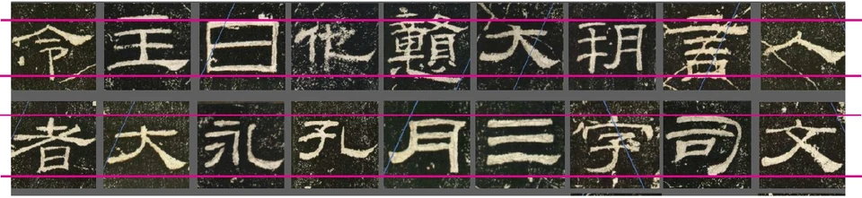
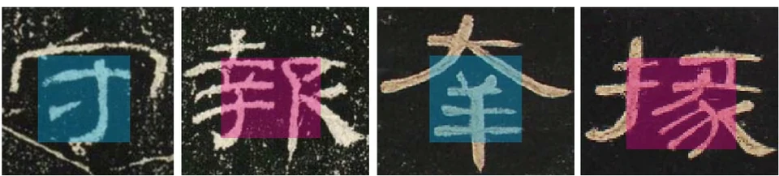
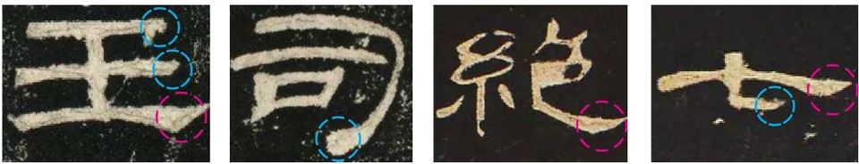
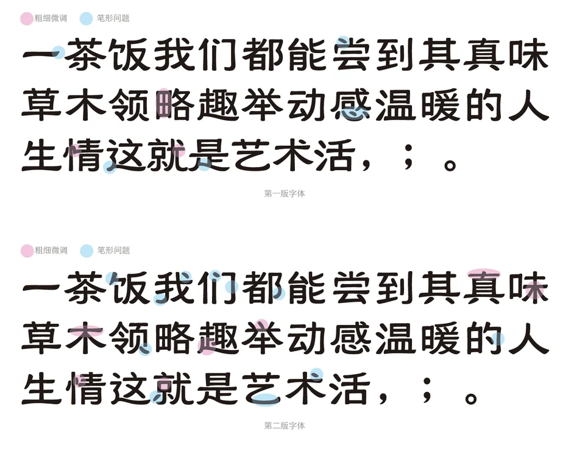
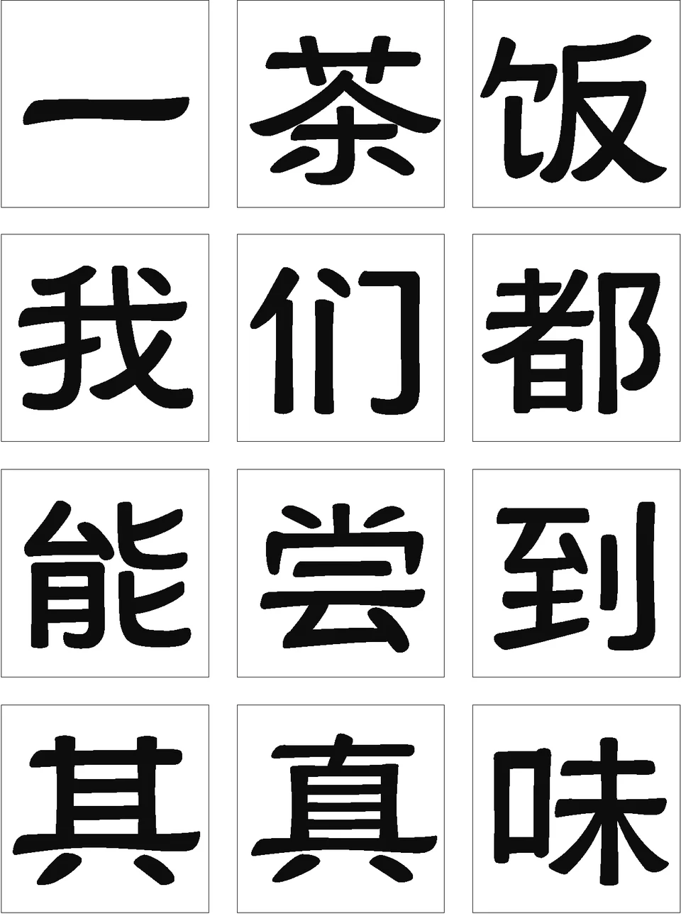
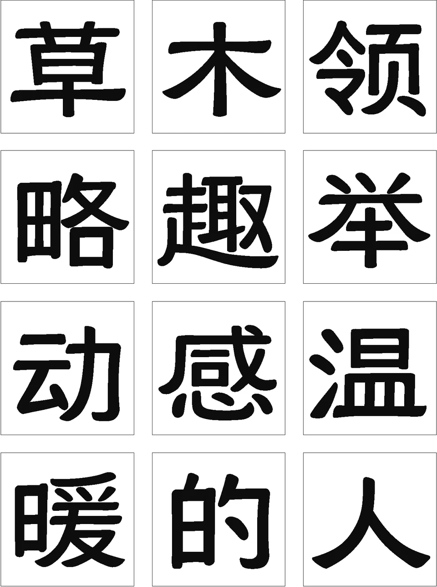
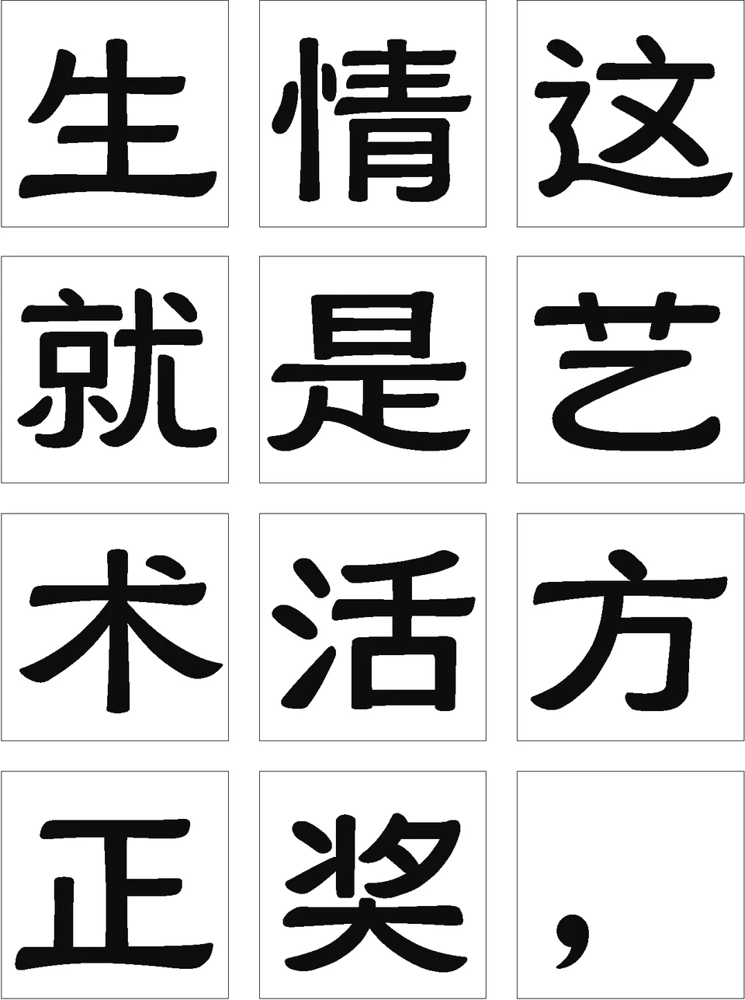
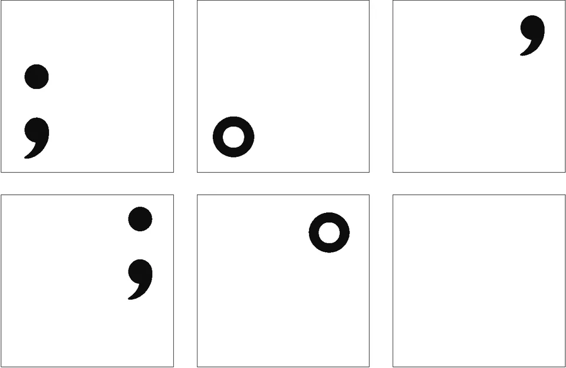
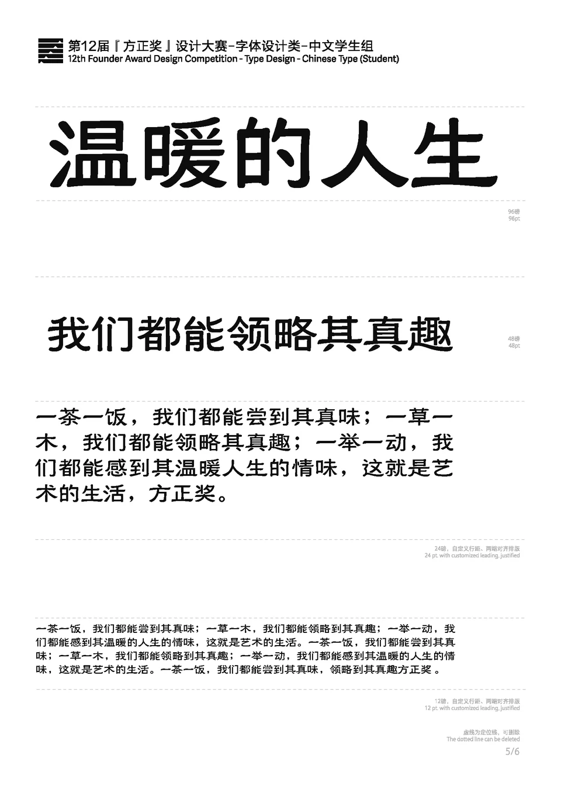
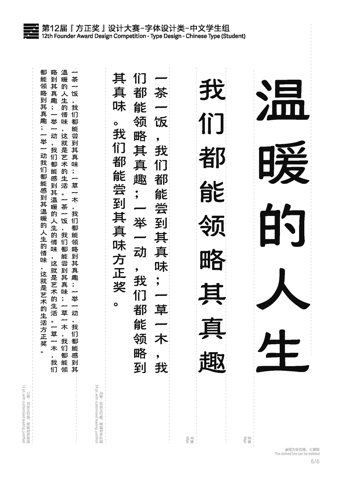

TYPE DESIGN / 2024.05
《隶书全瑛体》
《隶书全瑛体》以《曹全碑》与《乙瑛碑》为主要参考，探索隶书笔形与现代字体结构之间的结合。设计保留隶书圆润含蓄、舒展沉稳的特点，同时参考现代黑体的间架关系，使传统书写的韵味融入更清晰、统一的字形系统。
前期设计思路


以《乙瑛碑》为例，隶书的绝大部分字形都保持在所画的两条对称红线之间，在竖直方向大概占据 80% 的空间，而在水平方向为 100%。
受到整体扁长字形的影响，隶书许多字的中宫也多为偏向长而扁的矩形，但部分独体字和上下结构的字，中宫也偏向于正方形，需要根据具体字的间架结构分析设计。




与大多数书法一样，隶书也遵循“雁不双飞”的原则。而不同的是，除了“捺”之外，“钩”“撇”等笔画都会“藏锋”不出钩，形成隶书独特的含蓄之美。
创作从碑帖临摹与笔画分析开始，通过观察起笔、行笔与收笔的节奏，提取具有代表性的笔形，再逐步整理为可用于字符设计的笔画规范。针对现代简体字的结构需求，调整部件比例、中宫、重心与笔画之间的避让关系，使每个字在保持自身结构特点的同时，呈现一致的视觉风格。
调整过程





完整字形设计
字体经过多轮调整，并通过不同字号的横排与竖排检验整体效果。大字号用于观察笔形细节，小字号用于比较字面大小、黑白关系与阅读节奏，在反复校正中平衡书写的力度与排版的秩序。

